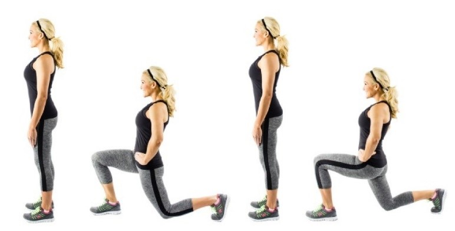

Tip 1
Tip 2
Tip 3
Tip 4
Tip 5
Tip 6
Tip 7
Tip 8
Tip 9
Tip 10
Tip 11
Tip 12
Tip 13
Tip 14
Tip 15
Tip 16
Tip 17
Tip 18
Tip 19
Tip 20
Jugo Verde 1
1/2 taza de frutos rojos congelados
1/2 nopal congelado
1/2 de taza de
espinaca
1 naranja en gajos
1 vaso con agua
1 jugo de un limón
SI EL JUGO ES ESPESO, REBAJAR CON AGUA
Jugo Verde 2
1 taza de espinaca
1 vaso de agua de coco + 1/2 taza de mango congelado
1/2 taza de piña
1/2 naranja en gajos
1 jugo de un limón
SI EL JUGO ES ESPESO, REBAJAR CON AGUA
Jugo Verde 3
1 taza de espinaca
1/2 taza de fresas
1/2 taza de frutos rojos
1 naranja
en gajos
1 cucharada de chía
SI EL JUGO ES ESPESO, REBAJAR CON AGUA
Jugo Verde 4
2 naranja en gajos
1/4 de pepino
1 ramita de apio
1/4 taza de perejil
1/2 taza de piña
1/2 taza de espinaca
1 jugo de limón
SI EL JUGO ES ESPESO, REBAJAR CON AGUA
Jugo Verde 5
1 taza de espinaca
1/2 zabahoria
1/$ de betabel
1/4 de taza de fresas
frescas o congeladas
1/4 taza de menta fresca
1 jugo de un limón
SI EL JUGO ES ESPESO, REBAJAR CON AGUA
Jugo Verde 6
1 taza de espinaca
1/2 taza de jitomate
1 rama de apio
1 jugo de un
limón
1 naranaja en gajos
1 vaso con agua
SI EL JUGO ES ESPESO, REBAJAR CON AGUA
Tipo de Grasas
Recuerda que las grasas están divididas en “grasas malas” y “grasas buenas”. Mientras comas grasas buenas todo es mejor ya que ayudan a cuidar el corazón.
Se encuentran en:
• El aceite de oliva
• El aceite de nabina
• Algunos frutos secos, como las nueces de Brasil
• El aguacate
¿Qué requiere nuestro cuerpo?
Recuerda que un buen cuerpo requiere de 80% alimentación y 20% ejercicio.
Macronutrientes
Los MACRONUTRIENTES son aquellas sustancias que proporcionan energía al organismo para un buen funcionamiento, y otros elementos necesarios para reparar y construir estructuras orgánicas, para promover el crecimiento y para regular procesos metabólicos.
Este grupo está constituido por:
• Proteínas
• Grasas
• Hidratos de Carbono
PROTEÍNAS:
Son los componentes de las estructuras de las células. Las necesidades de un adulto sano y sedentario son 0,8-1 g/kg/día. Nos aportan 4 kcalorías/gramo. Se recomienda entre un 10-15% del total de las calorías de la dieta en forma de proteínas en una dieta equilibrada.
GRASAS:
Son el nutriente energético por excelencia. Este grupo está formado por los triglicéridos, los fosfolípidos y el colesterol. Constituyen el 30-35% de una dieta equilibrada. Aportan 9 kcal/gramo.
HIDRATOS DE CARBONO:
Son una fuente importante de energía y proceden fundamentalmente de los vegetales. La ingesta en un adulto sano recomendada es de 3-5 g/kg/día. Aportan 4 kcal/gramo.
Desplantes
Aprovecha!
Al tener un día libre en tu plan alimenticio, aprovéchalo y come lo que quieras.
Será bueno para tu mente y cuerpo.
Disfruta!
No sufras con una dieta y disfruta de un estilo de vida saludable.
¿Sabías que ...?
El ejercicio de cardio quema energía y grasa.
El ejercicio de fuerza aumenta musculatura.
Recuerda...
Recuerda hacer cardio al menos 5 días a la semana.
Algunos ejemplos de cardio son:
• Correr
• Saltar
• Caminar
• Bicicleta
• Nadar
• Deportes (basketball, volleyball, football, tenis, étc)
Burpees
Sentadillas
Lagartijas
Saltos de Escalones